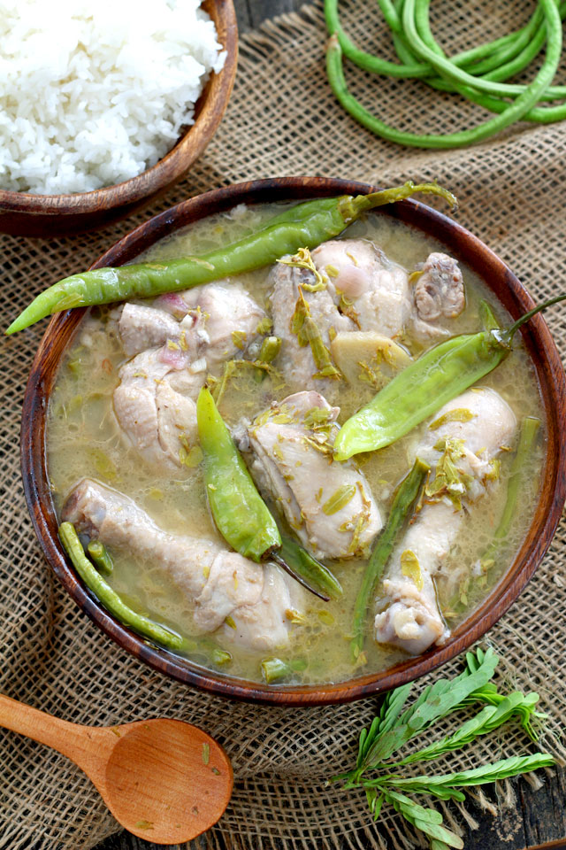

Sinampalukang Manok
Sinampalukang Manok is a chicken soup dish with a sour broth. It is has
similarities to Sinigang, which happens to be one of the most popular
Filipino dish.
Ingredients
- 2 lbs. chicken cut into serving pieces
- 3/4 cups tamarind flower buds or tamarind leaves
- 1 large red onion
- 4 pieces long green pepper siding pansigang
- 3 thumbs ginger sliced
- 4 cloves garlic crushed
- 1 20 g. Knorr Sinigang sa Sampaloc Mix, original
- 1 Knorr Chicken Cube
- 3 tablespoons fish sauce
- 6 cups water
How to Cook:
- Heat cooking pot and then sear the chicken. Continue to cook until most of the chicken fat are extracted.
- Remove the chicken from the pot. Set aside.
- Using the extracted oil, sauce garlic, onion, and ginger.
- Once the onion becomes soft, add the chicken back to the pot.
- Pour water. Let boil. Seal the tamarind flower buds in a cheesecloth and tie using a kitchen twine.
- Add the cheese cloth with tamarind flower buds in the pot. Stir.
- Add Knorr chicken cube and long green pepper. Cover the pot. Cook in medium heat until the chicken gets tender.
- Remove the tamarind flower buds. Add Knorr Singing Mix. Stir.
- Add fish sauce. Cook for 5 minutes.
- Transfer to a serving plate. Serve.
- Share and enjoy!